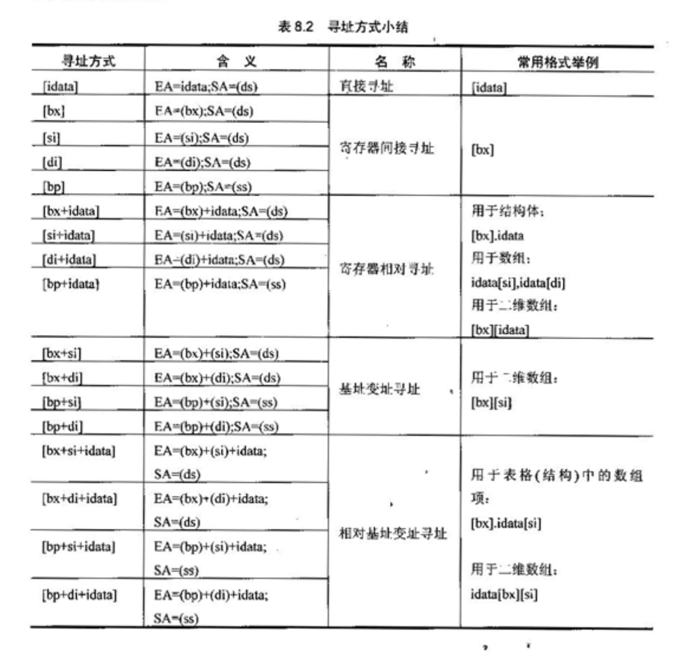
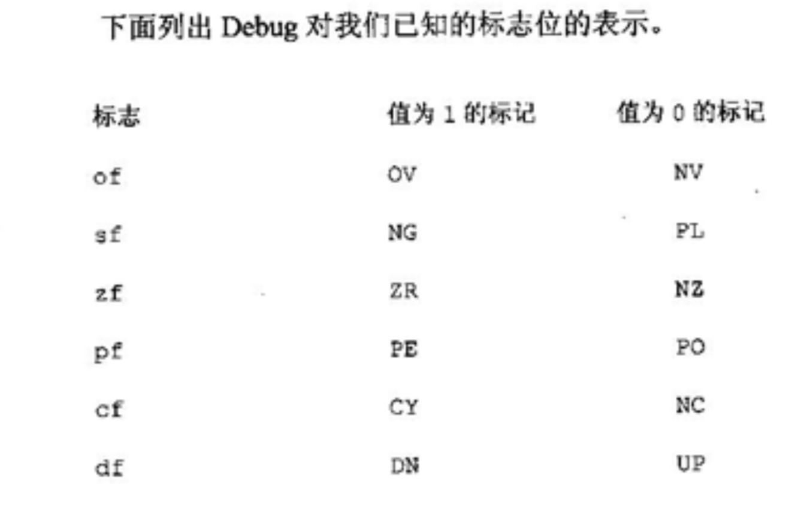

第三部分:指令核心
Abstract
内存寻址
内存是啥？计算机从诞生之初，就面临着CPU和I/O之间，与存储器之间越来越明显的速度矛盾。正是因此才诞生了内存，cache等一系列缓冲的加速设备。你可以理解为内存是CPU获取运行代码的唯一途径，注意这里的内存指的是内存地址空间。
CPU如何访问内存？当然是使用寄存器;那寄存器如何访问内存？这就涉及到内存寻址的知识。
寻址的方式有很多种类 ，不过归结到底都是段地址+偏移地址。段地址存储在段寄存器中，而偏移地址的方式就有很多种。见下图:

需要注意的是: * 上图中的
idata表示立即数，[]表示偏移地址。(ax)表示寄存器ax的内容。 *[]中的除了立即数之外，只有bx,si,di和bp四个寄存器可以进行寻址，其他的寄存器不行。 *[bp]的段寄存器默认是ss。 * 编译器masm和调试器debug两个工具对于mov ax,[idata]中的idata处理不同，编译器会将其识别为idata,所以在使用编译器的时候这种形式应该写成mov ax,ds:[idata]
数据处理(总结性质)
计算机处理的最终还是数据，那么就有两个最基本的问题: * 处理的数据在什么地方？ * 要处理的数据有多长？ ##### 问题一 绝大部分机器指令都是进行数据处理的指令，处理大致分为三类:读取，写入，运算。在机器指令这一层来说并不关心数据的值，而关心指令执行前一秒，将要处理的数据所在的位置。指令在执行之前，所要处理的数据可以在三个地方:CPU内部，寄存器，端口。 ##### 问题二
8086指令可以处理两种尺寸的数据:Byte和Word。所以在机器指令中需要指明是字操作和字节操作。
* 通过寄存器指明:ax，al等 * 用操作符X ptr指明内存单元的长度，X是word或者byte。比如:mov byte ptr ds:[0],1。 * 还有一些默认的操作比如栈操作默认为字操作。
指令详解
伪指令补充
db定义字节型数据dw定义字型数据dd定义双字节型数据dup和前面三个伪指令结合使用，用来进行数据的重复。db 3 dup(1,2,3)表示定义的三个字节型数据分别为1,2,3。
LOOP循环指令
主要进行两步操作，（cx）=(cx)-1，判断cx中的值。不为零则转至标号处执行程序，如果为零则向下执行。可见
cx中的值影响了loop指令的执行结果。
1 | mov cx,循环次数 |
JMP转移指令
可以修改IP，或同时修改CS和IP的指令统称为转移指令。概括地讲，转移指令就是可以控制CPU执行内存中某处代码的的指令。
根据修改的方式，只修改IP的称为段内转移，修改IP和CS的称为段间转移。由于转移指令对IP的修改范围不同，段内转移又分为:短转移（8位）和近转移（16位）。不同的转移方式，其基本的原理确实相同的。
###### 1-JMP short offset 转移指令值得注意的点就是offset指的不是确定的地址，而是从标号到指令之间的位移。
(IP)=(IP)+8位位移，段内短转移的位移范围位8位有符号数，用补码表示。offset处的地址-JMP指令后的第一个字节的地址。 ###### 1-JMP near ptr offset(IP)=(IP)+16位位移,段内近转移的位移范围是16位有符号数，用补码表示。原理和前者一样。 ###### 2-JMP far ptr offset 前面的几种类型地址都是通过offset和位移，而接下来的几种是在寄存器和内存中的给定IP或者CS。内存地址单元可以用任意的寻址方式得到。
（CS）=标号所在段的段地址，（IP）=标号所在段中的偏移地址。段间转移，会发现其跳转地址实际上是在指令中的offset的地址。和前两个还是有区别的。 ###### 2-JMP 16位reg 最基础的跳转指令，只是修改IP=16位的寄存器中内容。 ###### 2-JMP word ptr 内存单元地址 比如:jmp word ptr ds:[0]中ptr后面的就是一个地址，jmp word ds:[0],0后面跟两个地址。注意（CS）=(内存地址单元+2)，（IP）=（内存地址单元）。 ###### 2-jcxz 该指令为有条件转移指令，所有的有条件转移指令都是短转移。方式为:
if((cx)==0)jmp short offset
另外，所有的loop循环指令都是短转移。
CALL和RET指令
ret(近转移)
书中说ret指令用栈中的数据修改IP中的内容。之前对栈有一个分类，这里的栈是满递减堆栈。所以由此可知堆栈指针
SP一直指向最后一个压栈的数据。ret指令实际上把堆栈中的最后一个数据作为自己跳转的偏移地址。方式如下:
(IP)=((ss)*16+(sp)),(sp)=(sp)+2
从上面也可以看出来这两条指令等同于:pop IP
retf(远转移)
书中说retf指令用栈中的数据修改IP和CS中的内容。类似:
(IP)=((ss)*16+(sp)),(sp)=(sp)+2
（CS）=（（ss）*16+(sp)）,(sp)=(sp)+2
这四条指令等同于:pop IP,pop CS
call指令
call指令不能实现短转移，但是其转移的原理和jmp指令相同。如下：
(sp)=(sp)-2,((ss)*16+(sp))=(IP),(IP)=(IP)+16位位移这几条指令相当于:
push IP和jmp near ptr offset
call和ret指令(子程序)
先看一段代码:
1 | assume cs:code |
程序执行到
call s的时候，IP指向了后面的一条指令，然后CPU执行call s指令————将当前的IP（mov bx,ax的地址）压栈，然后修改为s地址。然后子程序开始执行，执行结束之后执行ret指令————从栈中弹出一个值，将CS:IP的值指向mov bx,ax。然后返回为原来的地址。这两条指令为子程序的调用提供了可能。
标志寄存器
寄存器是汇编程序员解决问题的最有利的手段，不仅仅在于可以存储数据，还具有辅助指令执行的功能。标志寄存器就是如此，用来存储CPU执行指令的某些执行结果。存储的信息称为“程序状态字PSW”。状态寄存器的每一位都有具体的含义。下面分别介绍:
##### ZF标志 零标志位，相关指令执行结束如果结果为0，zf=1；如果不为0，zf=0.
PF标志
奇偶标志位，相关指令执行结束如果结果的所有bit位中1的个数为偶数，pf=1,否则pf=0.
SF标志
符号标志位，相关指令执行结束如果结果为负，sf=1；否则sf=0。该标志是CPU对有符号数计算结果的一种记录。
CF标志
进位标志位，在进行无符号数运算的时候，它记录了运算结果的最高有效位向更高位的进位值，或从更高位的借位值。
OF标志
溢出标志位，在进行有符号数运算的时候，记录了是否发生溢出。
标志寄存器在Debug中的使用
标志寄存器是按照有意义的各个标志位单独表示的。如下。
下图是已知的标志位的表示:
 #### 其他指令（总结性质） 还有很多的指令比如MOV,CMP，abc等。但这里并不打算详细讲解每一条指令，就像书中所说:汇编语言只是载体，目的在于理解机器运行的原理和方式。
至此，我们已经学习了寄存器，内存,汇编指令，并且掌握了一个正常的程序控制流在机器层面的运行过程。接下来的内容，就属于操作系统的层面，引入异常控制流，也就是在正常的执行过程中有外界干扰的情况，这是理解整个OS的重点，也是我写这几篇技术博客的主要学习目的。(mit6.828中的汇编大同小异，只是指令集换成了AT&T的格式)。